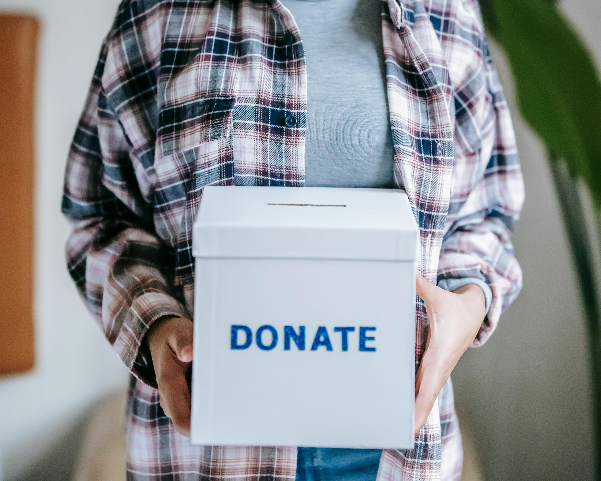

تبرع بالدم
"تبرعك بالدم ليس فقط ينقذ حياة الآخرين، بل يمنحهم فرصة جديدة للعيش بصحة جيدة ويعزز روح التضامن في المجتمع."
ساهم في الخير الان.jpg)
تبرع للمستشفيات
مساهمتك في دعم المستشفيات تساهم في توفير الرعاية الصحية الضرورية وتحسين جودة الخدمات الطبية للمحتاجين والمرضى في جميع أنحاء مصر.
ساهم في الخير الان

تبرع للجمعيات الخيرية
مشاركتك في الأعمال الخيرية تبني مجتمعاً أكثر تلاحماً وإنسانية، وتخفف من معاناة الفقراء والمحتاجين عبر تقديم المساعدات الضرورية."
ساهم في الخير الان